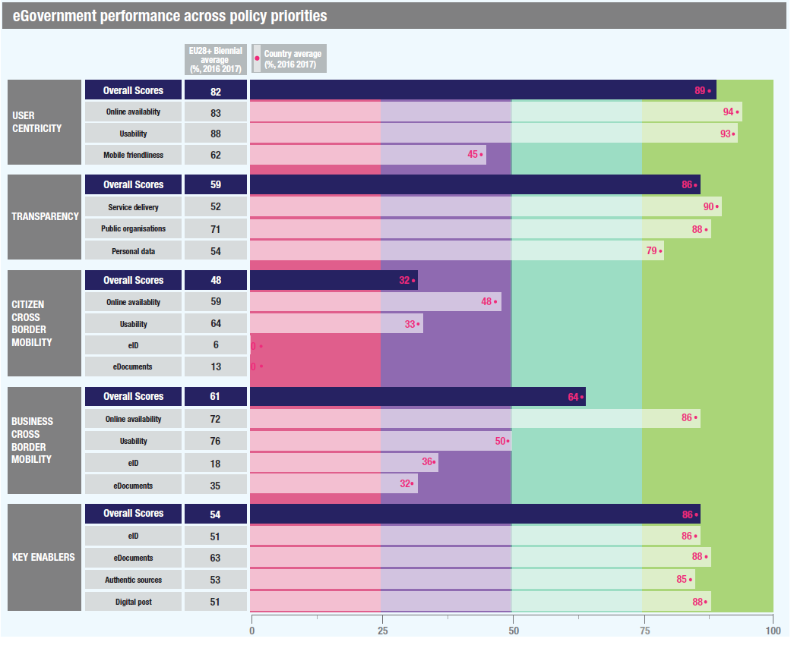

Digital Government Factsheet 2019
Lithuania
Table of Contents
Digital Government Highlights 6
Digital Government Political Communications 7
Digital Government Legislation 11
Digital Government Governance 18
Digital Government Infrastructure 22
Digital Government Services for Citizens 29
Digital Government Services for Businesses 36
Country Profile
Basic data
Population: 2 808 901 (2018)
GDP at market prices: 45 133 million euros (2018)
GDP per inhabitant in PPS (Purchasing Power Standard EU 28=100): 78 (2017)
GDP growth rate: 3.4% (2018)
Inflation rate: 2.5% (2018)
Unemployment rate: 6.3% (2018)
General government gross debt (Percentage of GDP): 39.4% (2017)
General government deficit/surplus (Percentage of GDP): 0.5% (2017)
Area: 65 300 km2
Capital city: Vilnius
Currency: Euro
Source: Eurostat (last update: 15 March 2019)
Digital Government Indicators
The following graphs present data for the latest eGovernment Indicators for Lithuania compared to the EU average. Statistical indicators in this section reflect those of Eurostat at the time the Edition is being prepared.
Percentage of individuals using the internet for interacting with public authorities in Lithuania | Percentage of individuals using the internet for obtaining information from public authorities in Lithuania | ||
Percentage of individuals using the internet for downloading official forms from public authorities in Lithuania | Percentage of individuals using the internet for sending filled forms to public authorities in Lithuania | ||
Digital Government State of Play
The graph below is the result of the latest eGovernment Benchmark report, which monitors the development of eGovernment in Europe, based on specific indicators. These indicators are clustered within four main top-level benchmarks:
- User Centricity – indicates to what extent (information about) a service is provided online and how this is perceived.
- Transparency– indicates to what extent government are transparent regarding: i) their own responsibilities and performance, ii) the process of service delivery and iii) personal data involved.
- Cross-Border Mobility – indicates to what extent EU citizens and businesses can use online services in another country.
- Key Enablers – indicates the extent to which five technical pre-conditions are available online. There are: Identification (eID), Electronic documents (eDocuments), Authoritative Sources, and Digital Post. Digital Post refers to the possibility that governments communicate electronically-only with citizens or entrepreneurs through e.g. personal mailboxes or other digital mail solutions.
These top-level benchmarks are measured using a life-events (e.g. mystery shopping) approach. Eight life events are included in the overall eGovernment performance score. Four of these life events were measured in 2013, 2015 and 2017 and the other four were measured in 2012, 2014, 2016, and again in 2018. The life events measured in 2017 were Regular business operations, Moving, Owning and driving a car and Starting a small claims procedure. The life events measured in 2018 are Business start-up, Losing and finding a job, Family life and Studying.

Source: eGovernment Benchmark Report 2018 Country Factsheet
Digital Government Highlights
Digital Government Political Communications
Digital Government Legislation
- Law on Electronic Identification and Trust Services for Electronic Transactions;
- Order on the specification of the procedure for granting status of qualified trust service providers and qualified trust services and incorporation thereof in the national trusted list and provision of activity reports of qualified trust service providers;
- Order on the specification for identification of personal identity and additional specific attributes for issuing qualified certificates for electronic signatures, electronic seals and website authentication.
Digital Government Governance
Digital Government Infrastructure
- In 2018, the State Enterprise Centre of Registers initiated and started a research & development project, which aimed to build a pilot version of the technology for preparation, storage and management of spatial 3D data necessary for effective implementation of economic development projects.
- In 2018, the Information Society Development Committee started to implement a new project to create appropriate organisational (management), methodological, legal environment and tools for smooth, operational-oriented and secure state information resource infrastructure consolidation and provide cloud services. Also, the Information Society Development Committee started a project to develop and deploy information and communication technology infrastructure for state cloud services and form human resources which need to provide state cloud services.
Digital Government Services for Citizens and Businesses
- The functionalities of the Information System of Legal Entities Participants was expanded: there is now the possibility for users to provide data about members and shareholders of cooperative companies and agricultural companies online.
- On the Passenger's portal travellers can fill in and present to Lithuanian Customs the following types of declarations: travellers’ declaration; cash declaration; declaration of fuel. The service is available in the Lithuanian, English and Russian languages. The portal also contains some information for travellers.
Digital Government Political Communications
Specific political communications on digital government
Enhancement of the Lithuanian residents’ ability to use the ICTs
The following tasks have been defined to meet this objective:
- To enable the target groups of the Lithuanian population that until now, for different reasons, have not used or barely used modern digital tools and the internet to gain the necessary digital skills and apply them in various fields, also involving local communities into these activities.
- To encourage the Lithuanian population to regularly update their ICT knowledge and digital skills, to securely and purposefully use the possibilities provided by the Internet.
- To make society aware of the diversity of ICT professions and encourage citizens to choose ICT-related professions, studies and informal education programmes.
- To provide more favourable conditions for teaching and learning, based on modern ICT, ensuring that the Lithuanian population has the possibility to be involved in life-long learning processes online.
Development of the electronic content and services and promotion of use thereof
The second objective is to create secure, technologically advanced, public and administrative electronic services convenient to the population and businesses, and encourage their use. The following tasks have been defined in order to meet this objective:
- To make as many public and administrative services as possible available digitally and to improve functionality of the already created services.
- To create and develop health-related eServices and ICT products.
- To introduce ICT solutions increasing openness of public governance processes and encouraging closer public involvement.
- To develop transport and spatial data-related eServices and ICT products.
Promotion of Lithuanian culture and Lithuanian language by ICT measures
- To digitalise Lithuania’s cultural heritage and use that as a basis to create publicly accessible digital products and electronic services, with a view to achieving long-time preservation of digitised Lithuanian cultural heritage and their even dissemination both in Lithuania and the EU.
- To create and develop publicly accessible written and spoken digital resources in the Lithuanian language and implement them in the ICT and eServices.
Data openness
The fourth objective is to make the data of state and municipal authorities and agencies (hereinafter referred to as agencies) available to the public and business, encourage the use of such data for innovative solutions and e-service creation, and also create favourable conditions for businesses to implement and use ICT to improve their efficiency and competitiveness. The following tasks have been defined to meet this objective:
- To create effective and innovative solutions ensuring the unified and standardised provision of the open data of state and municipal authorities and agencies, unlimited access to the data and the possibility for the public and businesses to reuse them.
- To create methodical, legal means for opening the data of state and municipal authorities and agencies and create an effective management structure for opening the data.
- To increase the efficiency and competitiveness of small and medium-sized companies by encouraging them to implement and use ICT.
- To improve the legal, organisational and technical regulation of information society services by providing for new business opportunities and better protection of the rights of citizens and businesses in the Digital space.
Development of the ICT infrastructure
The fifth objective is to ensure a geographically consistent development of broadband electronic communication networks throughout the national territory and to promote the use of electronic communication services. The following tasks have been defined to meet this objective:
- To ensure the development of the broadband electronic communication networks in the areas where the market has failed to ensure this infrastructure development and service provision.
- To promote competition in broadband electronic communication networks market and use of broadband electronic communication services.
- To renew and develop the public internet access infrastructure of public libraries.
Development of safe, reliable and interoperable ICT infrastructure
- The sixth objective is to ensure the development of safe, reliable and interoperable ICT infrastructure. The following tasks have been defined to meet this objective: to encourage the population to use electronic identification tools and services that ensure the reliability of electronic operations.
- To ensure the optimisation of the ICT infrastructure, used by national authorities and the automatic interaction of national informational systems and registers.
- To ensure the cyber security of critical information infrastructure and the state information resources (SIR).
Key enablers
Access to public information
No political communication was adopted in this field to date.
eID and Trust Services
No political communication was adopted in this field to date.
Security aspects related to digital government
National Cybersecurity Strategy
The strategy contains five main targets:
- Strengthen cyber security of the country and foster development of cyber defence capabilities.
- Ensure the prevention and investigation of criminal offences in cyber space.
- Promote cyber security culture and development of innovation.
- Strengthen close cooperation between private and public sectors.
- Enhance international cooperation and ensure the fulfilment of international obligations in the field of cyber security.
Interconnection of base registries
No political communication was adopted in this field to date.
eProcurement
No political communication was adopted in this field to date.
Domain-specific political communications
Operational Programme for EU Structural Funds Investments
eHealth System Development Programme
Interoperability
No political communication was adopted in this field to date.
Emerging technologies
- Legal and ethical perspective;
- AI ecosystem and Lithuania;
- AI in the Lithuanian economy;
- Skills and competences;
- Research & Development;
- Skills.
Digital Government Legislation
Specific legislation on digital government
Decree on the Implementation Plan of the eGovernment Programme
The decree for the implementation plan of the government programme (2016-2020) was adopted on 13 March 2017. Most eGovernment-related goals are in section 3.2 of the decree ‘Modernisation of public and administrative services and expansion of the information society’. It encompasses the creation of advanced eServices, surveillance of all public and administrative services (including user satisfaction), introduction of the eVoting system, and increase of the efficiency of business supervision institutions while reducing the burden for businesses. This context is crucial for the need to develop the online catalogue of services (PASIS) further (as stressed earlier, it could include creation of the integrated (complex) services, ensuring surveillance of public and administrative services, also assessing the electronic identification level needed and ensuring English translation for the descriptions of the most relevant services).
The Law on Public Administration
On 31 March 2017, the new amendment to the Law on Public Administration came into force, making it mandatory to provide and update information in PASIS to all public and administrative service providers. On 5 July 2017, the rules of this information system were amended by an order from the Minister of Interior. In connection with this change, on 11 July 2017 a new description regarding the delivery of the information to PASIS (to service providers) was adopted.
Articles 6, 7 and 8 of the new law contained provisions regarding digital public services. All public institutions were now required by law to provide detailed descriptions of their services on their own website as well as in the respective digital service portal (PASIS), and to also include the link to the digital service portal on their websites. This will allow for better monitoring of the quality and availability of digital services at the national level. The law also provided a new, clearer definition of digital public services.
Law no. X-239 Amending Article 19 of the Public Administration Act
The law, passed on 9 June 2005, provided the basis for the exchange of electronic documents between the state and municipal institutions, and the public. It stipulated that requests submitted by citizens via electronic means have to be signed using an electronic signature. Furthermore, all answers of state institutions towards citizens shall be signed by the head of the public administration institution concerned, or a person authorised, by means of an 'advanced eSignature', in the sense of the EU Directive on a 'Community framework for electronic signatures' (1999/93/EC).
Public Administration Act
The law created the necessary legal preconditions for the implementation of the provisions of the Constitution of the Republic of Lithuania, according to which all public institutions serve the people. In this context, it stipulated the definition of public administration bodies and their systems, their operating principles, the administrative regulation of public services and administrative and institutional framework of internal administration, as well as administrative procedures for examination and the burden of dealing with personal requests and complaints.
Key enablers
Access to public information
Law on the Right to Receive Information from State and Local Authorities and Institutions
The original law of 2000 was amended to comply with the PSI Directive (2003/98/EC). The amended law (Nr. X-383 of 10 November 2005) transposed the Directive and regulated the right of private companies and citizens to obtain information from central and local government and to re-use it. It defined the modalities for the use of public sector’s information resources and determined the obligation of central and local government to provide this type of information to all those concerned.
The transposition of Directive of the European Parliament and of the Council 2013/37/EU amending Directive 2003/98/EC on the Re-Use of Public Sector Information (PSI) into the national law the amendments of the Law on the Right to Receive Information from State and Local Authorities and Institutions was adopted (Nr. XII-2666, October 11, 2016). The Law increased the scope of information intended for re-use, including libraries, museums and archives that accounted for a significant part of the public sector information resources, in particular upon the increase in digital materials as a result of implementation of digitalisation projects. Therefore, these cultural heritage resources have a huge innovation potential for re-use in such sectors as education and tourism. The new Law established the conditions for the open licence to use the public sector information based on the Creative Commons License, which enables an information recipient to publish the information received, without obtaining an institution‘s consent, by any method including making it public online or by means of other electronic communications networks, reproducing it in any format or by any method, translating it into other languages, adapting, processing or re-making otherwise, distributing or providing (transmitting) to third parties. These activities would be subjected to minimal requirements only, for example, the requirement to specify the source and date of the information received. The Law established the use of open electronic data formats in the provision of data. In order to facilitate the information re-use, the access to the public sector databases and the metadata contained therein will be provided through a single access point – the public sector data portal.
The law was amended in 2018 to transpose the Directive (EU) 2016/2102 of the European Parliament and of the Council of 26 October 2016, on the accessibility of the websites and mobile applications of public sector bodies.
eID and Trust Services
Law on Electronic Identification and Trust Services for Electronic Transactions
Adopted on 26 April 2018, the law ensured the compliance of Lithuania’s legal framework with the eIDAS Regulation. The main purpose of the law is to create a legal basis for effective operation of electronic identification and the market of trust services in the Republic of Lithuania to ensure the best possible protection of the interests of the users of these services. This law regulated the legal effect of electronic signature, electronic seal, electronic time stamp and trust services, obligations of trust service providers and users, terms of and procedure for suspension and revocation of qualified certificates for electronic signature, electronic seal or certificates for website authentication and supervision of trust service providers.
Order on the Approval of the Specification of the Procedure for Granting Status of Qualified Trust Service Providers and Qualified Trust Services and Incorporation Thereof in the National Trusted List and Provision of Activity Reports of Qualified Trust Service Providers
The order detailed the procedure for granting status of qualified trust service providers and qualified trust services. It also incorporates the actors in the national trusted list and provision of activity reports of qualified trust service providers. The procedure was approved by Order No 1V-588 of Director of the Communications Regulatory Authority of the Republic of Lithuania on 21 June 2018.
Order on the Specification for Identification of Personal Identity and Additional Specific Attributes for Issuing Qualified Certificates for Electronic Signatures, Electronic Seals and Website Authentication
The order laid down the specification for identification of personal identity and additional specific attributes for issuing qualified certificates for electronic signatures, electronic seals and website authentication. The specification was approved by Order No 1V-1055 of Director of the Communications Regulatory Authority of the Republic of Lithuania on 26 October 2018.
Law on Identity Cards of the Republic of Lithuania
Adopted in 2001, the law regulated the purpose of the ID card, procedures for its issuance, change and usage, as well as the data to be recorded on it. The law was amended in June 2008 with reference to the fact that the personal identity card shall be used for electronic personal identification and for signing electronic documents.
Security aspects related to digital government
Lithuanian Law on Cybersecurity
The law, adopted on 11 December 2014 was last amended on 27 June 2018, in order to implement the Security of Network and Information Systems (NIS) Directive (EU)2016/1148/EU) into law. The law defined the organisation, management and control of the cyber security system; the competence, functions, rights and duties of state institutions responsible for cyber security policy making and implementation; the duties and responsibilities of cyber security entities and established cyber security assurance measures.
On the 1 January 2018, amendments to the law on Cyber Security, and to the Law on the Management of State Information Resources, entered into force. The laws consolidated cybersecurity policy making and implementation functions under one roof – the Ministry of National Defence. National Cyber Security Centre (NCSC) under the Ministry of National Defence became the only agency in Lithuania to organise cyber incident management and assist other state institutions, businesses and residents under one stop shop’ principle, since 1 January 2018.
Code of Administrative Offences of the Republic of Lithuania
Regarding the implementation of the Directive on Security of Network and Information Systems Directive (EU)2016/1148/EU) into national law, amendments to the Code of Administrative Offences of the Republic of Lithuania were enacted on 27 June 2018. The provisions of the Code of Administrative Offences imposed responsibility upon the cyber security entities in relation to not providing the requested information on their IT systems compliance with the provisions of organisational and technical cyber security requirements or non-compliance with the provisions of organisational and technical cyber security requirements.
Organisational and Technical Cyber Security Requirements Imposed on Cyber Security Entities
Adopted on 13 August 2018, alongside the National Cyber Security Strategy, the law set out the organisational and technical cyber security requirements for cyber security entities.
Methodology for Identifying Critical Information Infrastructures Critical Information Infrastructure Identification Methodology
Adopted on 13 August 2018, alongside the National Cyber Security Strategy, the law set out the criteria for identifying critical information infrastructure and the process for identifying critical information infrastructures.
National Cyber Incident Management Plan
Adopted on 13 August 2018, alongside the National Cyber Security Strategy, the law established cyber incident categories, the information procedure for notification on cyber incidents, the cyber incidents management requirements for cyber incident investigation and cyber incident analysis after the investigation.
Law on Legal Protection of Personal Data
The Law on Legal Protection of Personal Data was adopted on 11 June 1996, and last amended on 16 July 2018. The purpose of this law was the protection of the fundamental rights and freedoms of an individual’s right to personal data protection, and to ensure a high level of protection of personal data. This law established the peculiarities of personal data processing, the legal status and powers of the State Data Protection Inspectorate, the powers of the Inspector of Journalist Ethics, the procedure for investigation of infringements of the law governing the personal data and/or privacy protection and for the imposition of administrative fines by the State Data Protection Inspectorate and the Inspector of Journalist Ethics. The law is compliant with the GDPR Regulation.
Interconnection of base registries
The Law on Management of State Information Resources
The aim of this law was to ensure proper creation, management, disposal, use, supervision, interaction, planning, financing, and protection of the state information resources. This law established:
- Types of state information resources;
- Formation and implementation of the State Information Resources Policy;
- Activities of the State Information Resources Management Council and authorised persons of data management;
- Rights, duties, and responsibility of the managers of registers and state information systems, administrators of registers and state information systems, natural and legal persons of the Republic of Lithuania, natural and legal persons of the EU Member States and (or) European Economic Area states, entities not having the status of a legal person, their branches and representative offices providing data, information, documents and (or) their copies to and receiving it from the registers and state information systems;
- Main principles for creation and management of state information resources;
- Planning of creation and management of state information resources;
- Interaction platform of the state information resources;
- Assessment of management and protection of information technology tools used to process information managed by the institution while performing its statutory functions;
- Financing of expenses incurred during the creation, management and supervision of the state information resources.
The law was last amended on 21 November 2017 by transferring the remaining responsibilities in the field of electronic information security from the Ministry of the Interior to the Ministry of National Defence. The last amendments to the law on 20 December 2018 foresaw the provisions for the creation of a Governmental Network, detached from a public internet, covering state institutions, which have functions related to mobilisation. This will ensure that even in the time of conflict fundamental institutions are protected and able to exchange information.
Law on Offence Registries
Since 1 July 2015, a new law of the Republic of Lithuania on the offences registry (under the Lithuanian Administrative Code of 2571, 260, 272, 288, 292, 294, 299, 302, 3025, 3028, 306, 308, 309, 312, 313, 314) entered into force. The main purpose of this register is to collect all the recorded offences recorded in accordance with the administrative procedure of violations.
All of the registry recorded information will be available to the competent state authorities dealing with administrative offenses, and persons who have committed administrative violations, will be able to take advantage of newly developed electronic services, designed to quickly and conveniently pay fines imposed. To this end, an integrated register with the Tax Accounting Information System (MAIS) and the taxpayer eEducation, counselling and information services system (Eski) has been developed.
Regulation on the Establishment of the Registry of Legal Persons and Legal Entities Registry
This law states that the Registry of Legal Persons is the main state registry for objects such as legal entities, their branches and representative offices of foreign legal persons and other organisations. The Ministry of Justice is the manager of the Register of Legal Entities. Documents, data and information from the Register of Legal Entities can be provided for a state fee according to the procedure established by the laws of the Republic of Lithuania or free of charge under exceptions determined by the law.
Population Registry Law
The law established the Lithuanian Population Registry and management procedures with the objects in it, the data processed and the data policy. The law set out the registry as the main state registry with the duties of collecting, storing and processing data of Lithuanian citizens and residents. Furthermore, the law specified what basic personal data is to be processed in the Registry, as well as that the Ministry of Justice is the body managing the registry.
Real Estate Registry Law
The law sets out the legal framework for the Real Estate Registry whose purpose is to establish immovable items, property and other real rights and constraints to these objects. All real estate entries made in the registry are considered correct and complete until contested. Additionally, according to the law, the Registry is managed by the Ministry of Justice, and more specifically by the Central Registrar and some territorial registrars who are subordinate to the central one.
Regulation on the Registry of Road Transport Vehicles
The regulation sets out the Road Vehicles Registry’s management bodies, their rights and obligations, the registry data, its interaction with other registries, as well as registry data safety and reorganisation. The authoritative body for the Vehicle Registry is the Ministry of Interior, as defined by the legislation, which also describes the exact data to be processed in the registry, such as: the technical data of the road vehicles, restrictions, the unique identification code of the registry object, the vehicle registration plates, etc.
Regulation on Real Property Cadastre
Pursuant to the amended Regulations on Real Property Cadastre, all activities related to submission of the cadastral file of a real property object, its checking and approval as well as entry of cadastral data of real property object into the cadastre, change, cancellation and correction of such data is done via electronic means as of 1 January 2018. The abovementioned is performed in the subsystem of the Real Property Register ‘Matininkas’ (Surveyor) with regard to buildings and in the subsystem of the Real Property Register ‘Geomatininkas’ (GeoSurveyor) with regard to land parcels.
eProcurement
Law on Public Procurement
Public procurement procedures in Lithuania are regulated by the Laws on Public Procurement. The most recent version of the laws, transposing the Directive 2014/24/EU and Directive 2014/25/EU came into force on 1 July 2017.
What concerns eProcurement, the aforementioned Laws contain provisions on obligation to use CPP IS for communication and exchange of information between the public buyers and economic operators, electronic publication of tender notices and submission of tenders, and the use of eAuctions and dynamic purchasing systems.
eInvoicing Legislation
The European standard on electronic invoicing was published and came into at the end of 2017. Currently, Lithuania is in progress of transposing Directive 2014/55/EU into national law.
Lithuania launched a new standard eInvoice module ‘eInvoicing’ on 1 July 2019. It enabled the contracting authorities and entities to receive and process electronic invoices from other EU countries that conform to the European standard EN 16931-1:2017. Electronic invoices of a new standard may be delivered by suppliers through any certified PEPPOL Access Point that uses PEPPOL AS4 Profile. Lithuanian businesses and contracting organisations are encouraged to get ready for changes in advance and to harmonise the content and format of their electronic invoices with the new standard module ‘eInvoicing’.
Further changes are needed to implement Directive 2014/55/EU of the European Parliament and of the Council of 16 April 2014 on electronic invoicing in public procurement. Respective provisions of the Directive will be transposed into the Law on public Procurement of the Republic of Lithuania.
Domain-specific legislation
Law on Services
On the 15 December 2009, the Lithuanian Parliament adopted the Law on Services. The law was adopted to implement Directive 2006/123/EC of the European Parliament and of the Council of 12 December 2006 on Services in the Internal Market (OJ 2006 L376/36). The law aimed to simplify procedures and formalities that service providers need to comply with. In particular, it requires that unjustified and disproportionate burdens be removed so that the establishment of a business and the cross-border provision of services are facilitated. The law also strengthens the rights of the recipients of such services and prohibits discriminatory conditions based on the nationality or the place of residence of the service recipient, such as discriminatory tariffs.
Law on Information Society Services
The law was adopted in May 2006 to ensure implementation of EU Directive 2000/31/EC on certain legal aspects of information society services, in particular on electronic commerce in the Internal Market (eCommerce Directive). The main purpose was to establish legal grounds for the regulation of the provision of information society services. The law stipulated the requirements for the information provided and the conclusion of agreements by electronic means, regulated responsibilities, rights/duties and activities of service providers and, furthermore, established the means of dispute resolution.
The law also protected the freedom to provide information society services towards a party established outside the country. Restrictions may apply in certain cases, such as intellectual property rights, freedom of choice of law applicable to a contract, and others.
Interoperability
Recommendations on the Record of the Administrative Services Delivery
The legal act was brought by the Minister of the Interior on 1 December 2009. It lays down procedures for recording administrative services delivery and is applicable to all Lithuanian public administrations which deliver such services.
Emerging technologies
No legislation was adopted in this field to date.
Digital Government Governance
National
Policy
| Elijus Čivilis Vice-Minister responsible for Digitalisation policy Contact details: Ministry of the Economy and Innovation of Lithuania, Gedimino pr. 38, LT-01104 Vilnius E-mail: elijus.civilis@eimin.lt Source: https://eimin.lrv.lt/lt/struktura-ir-kontaktai/vadovybe/elijus-civilis |

Ministry of the Economy and Innovation
Coordination
Ministry of the Economy and Innovation
Information Society Development Committee
The Committee is a body under the Ministry of Economy and Innovation, which coordinates processes related to the development of information society in the country. The Committee is also responsible for the coordination of state information resources development, re-use of documents and the provision of information technology services.
Implementation
Information Society Development Committee
The Committee is a body under the Ministry of Economy and Innovation, which coordinates processes related to the development of information society in the country. The Committee is also responsible for the coordination of state information resources development, re-use of documents and the provision of information technology services.
Communications Regulatory Authority
Ministries and other State Institutions
Ministries and other state institutions are responsible for implementing eGovernment projects, such as front and back office services, pertinent to their respective areas of competence.
Support
Infostruktūra
Infostruktūra is a state-owned company, created in 1992, which provides IT infrastructure and services to central and local governments. The company has created and maintained networks such as the State Institutions Computer Network (SICN) and the Secure State Data Communications Network (SSDCN).
Base registry coordination
No responsible organisations were reported to date.
Audit
The mission of the office is to assist in the management and use of funds and other resources to support the parliament in the execution of parliamentary control and to promote efficient public services.
Data Protection
State Data Protection Inspectorate
Ministry of National Defence
Subnational (federal, regional and local)
Policy
Counties and Municipal Authorities
The strategic responsibility for eGovernment at the regional and local levels lies with each individual county and municipal authority.
Coordination
Counties and Municipal Authorities
Regional and local eGovernment initiatives are coordinated by each individual county and municipal authority. Municipalities belong to counties which since 2010 have been territorial but not administrative units
Implementation
Counties and Municipal Authorities
Support
Infostruktūra
Infostruktūra is a state-owned company, which provides IT infrastructure and services to central and local governments. In 2019, Infostruktūra was transformed into a state institution which operated a secure governmental network capable of exploiting the benefits of peacetime systems while ensuring their viability in case of possible military action.
The Association is a non-profit organisation, in the form of a legal entity, which represents the common interests of its members - i.e. local authorities - to all authorities of the state, and to foreign and international organisations of local authorities. ALAL has limited power to coordinate eGovernment initiatives in all municipalities.
The network of Public Libraries
Base registry coordination
No responsible organisations were reported to date.
Audit
The mission of the office is to assist in the management and the use of funds and other resources to support the parliament in the execution of parliamentary control and to promote efficient public services.
Data Protection
No responsible organisations were reported to date.
Digital Government Infrastructure
Portals
The State Information Resources Interoperability Platform (SIRIP) is the main public interoperability platform, created and managed by the Information Society Development Committee.
SIRIP consists of two main parts:
- Data exchange platform;
- Central electronic services portal eGovernment gateway.
Launched in January 2004, and massively revamped in 2015, the eGovernment Gateway portal offers a one-stop-shop for public information and services for citizens and businesses. Also, services are categorised by important life events. The eGovernment Gateway includes links to public information and public services by redirecting citizens and businesses to appropriate websites of public authorities. In the last year the portal had 16.9 million visitors (7.49 million visitors in the first four months of 2019). In 2019, the portal provided access to over 613 eServices.
PASIS
The System for Interoperability Among Public Administration Institutions' Information System' (PASIS) enables state and municipal institutions, establishments and companies to provide electronic public services under the one-stop-shop principle. It furthermore allows centralised authentication of a person and subsequent payment for the delivered service using a secure inter-institutional data exchange.
SIRIP
The State Information Resources Interoperability Platform (SIRIP) was created and managed by the Information Society Development Committee. It is a system that delivers centralised access to public services. It is a convenient electronic platform that offers an easy way for public administrations to design, deliver and manage eServices. It is also a universally accessible virtual space where these services can be applied for.
SIRIP provides a possibility to determine the identity of the service recipients in a flexible, safe and reliable way. System users can connect using a mobile or electronic signature, EU identity card or electronic banking systems. It also enables recipients to pay for services in a safe and convenient manner through different payment methods, while allowing external systems to perform and administer them in the SIRIP space. Payment processing is simplified by payment intermediary services as well as institutions don't need to conclude separate payment agreements with each bank.
SIRIP web portal is not only a way to access but also a convenient tool for designing eServices. With the integrated development environment, process building becomes a straightforward procedure that does not require advanced programming skills. Public service providers can request form, data structure, process and integration interface creation without leaving the comfort of SIRIP environment. The platform also provides access to services designed using SIRIP as well as external systems.
Solutions enable the heads of legal entities to authorise their employees to perform certain actions in the electronic space.
It is easy to use the tool offering a range of electronic services. For example, a service implemented by SIRIP ensures functionality of collection, management and storage of electronic documents, enabling budgetary institutions with a small organisational structure to manage documents easily.
SIRIP created the structure and transferred into electronic space the 65 most important services provided by the country's municipalities and 29 services and 111 electronic applications for provision of services to 14 state institutions.
The implemented solutions guarantee a convenient and easy receipt of services of the state and municipal institutions by residents, businesses and foreign nationals. It increases transparency and efficiency of state and municipal institutions, agencies and companies while new electronic services reduce time and costs for design, provision and service receipt.
This multifunctional, continuously improved, user-friendly SIRIP system allows quick new electronic services and ensures mutual accessibility between governmental institutions and residents.
In July 2018, a project of further SIRIP development was initiated. The main goal was to increase quality of services in SIRIP environment and to create four additional complex public electronic services based on life events.
SIRIP currently unites 650 institutions, provides access to over 613 services and has more than 2.4 million unique visitors each year. To find out more information visit the SIRIP website.
i.APS
The main purpose of the eAccounting system is to provide all natural persons (self-employed according to a business certificate or self-employed according to a certificate of self-employment) with the opportunity to manage and use more simplified accounting services in the basis of data accumulated, thus to assist in reducing administrative burden and ensuring more effective control on tax compliance and the accounting of income.
Implementation:
- There is no obligation to start using the subsystem;
- Automatic calculation of various types of taxes (income, social security, etc.);
- The invoicing/storage subsystem for natural persons;
- Analytic reports for users of the subsystem;
- Automatic notification about the obligation to be registered as a VAT payer;
- The invoicing subsystem will be used by natural persons.
Essential changes brought thanks to the system:
- In order to save taxpayers’ time tax returns concerning taxpayers’ incomes are prefilled based on the preliminary information;
- The accounting/storage subsystem for natural persons is accessible via internet;
- Information about received income and incurred expenses can be entered electronically into a register of the subsystem of accounting of income and expenses
Register of Legal Acts
In accordance with the Law on Legislative Framework since 1 January 2014, a centralised information system to track and coordinate the legislative process (TAIS) and paperless information system for publishing legislative acts (TAR), was created. TAIS is used for drafting legal acts and for ensuring that concentrated outcomes of the legislative process are accessible to the public in a single spot. The Register of Legal Acts (TAR) is used for registering and publishing legal acts, their consolidated versions, depersonalised rulings, and international treaties, all of these are made publicly available, free of charge, 24/7. The users of systems are State and municipal institutions, and other legal bodies involved in legislation. Once a legal act is registered and published on the TAR, it is considered officially promulgated. A legal act reaches the TAR in the form of eDocument with an eSignature.
Networks
Secure State Data Communications Network (SSDCN)
Data Exchange
ESPBI IS
The Electronic Health Services and Cooperation Infrastructure Information System (ESPBI IS), is a national system of organisational, technical, and software measures that developed a centralised database of health data and enabled the exchange of such data among patients, healthcare professionals, and institutions.
ESPBI IS strives to ensure a higher level of patien’ awareness about their own health, a more effective use of available resources for provision of healthcare services, and help to base those services on modern technologies.
The structure of the ESPBI IS is based on a repository database, which consists of separate databases of patients’ electronic health records (EHRs), medical devices, classifiers, medical images, ePrescriptions, as well as reports and statistical information.
Since mid-2017, the number of electronic medical records, including electronic prescriptions, has grown significantly. In March 2019, about 850 (out of 900) healthcare institutions were connected to the central eHealth system (ESPBI IS) and have sent at least one document electronically to the central eHealth system. All pharmacies are connected to the central eHealth system and can dispense medicines based on electronic prescriptions. In April 2019, 91% of all reimbursed drugs were prescribed electronically, while all birth and death certificates were issued electronically.
The data stored in the ESPBI IS is also accessible for the patients via special national internet portal.
Social Support Family Information System (SPIS)
The Social Support Family Information System (SPIS) is an information system operating under cooperation agreements between the Ministry of Social Security and Labour and all municipalities of the country. The purpose of SPIS is to uniformly record and accumulate information on social assistance provided in municipalities (social benefits and compensations, social support for pupils, social services, activities carried out in the field of protection of the rights of the child, etc.), to analyse this information by municipalities, types of support and beneficiaries. as well as preventing support from several municipalities at the same time.
Via SPIS the residents can use a set of electronic public services, i.e. the residents can submit the following requests electronically:
- Grant a lump sum to a child born or adopted;
- Grant a child allowance;
- Grant a lump-sum benefit to a pregnant woman;
- Allow more than one child to receive the benefit at the same time;
- Pay for the care of the child of the learner or student
- Provide care/welfare benefit;
- Allocate a targeted supplement to care/welfare benefits;
- Grant social benefits;
- Reimbursement of housing heating costs, drinking water and hot water costs;
- Grant a funeral allowance;
- Earmark targeted compensation for care/assistance costs;
- Target compensation for nursing costs;
- To allocate targeted compensation to the person who has been in charge;
- Allow children under 18 to receive benefits. Disabled (up to 24 years old) with disabilities recognised by the disability and incapacity for work service as disabled and whose families do not have working persons;
- Provide free meals for pupils;
- Support the acquisition of student supplies;
- Providing transport services;
- Identify the level of special needs;
- Issue and change a disabled person's certificate for persons who have reached the age of retirement;
- Appointment of a child's guardian (caregiver);
- Allocate a technical assistance measure to a disabled person or to compensate for the cost of purchasing this facility.
Bailiffs’ Information System
After implementation of the project Creation of e-Services for Participation in the Enforcement Process, Auctions and Forced Auctions in 2015, the following services of Maturity Level 4 were developed: the Bailiffs’ Information System, consisting of internal and external portal, subsystem of electronic auctions and electronic forced auctions was modernised; the electronic enforcement file portal www.antstoliai.lt was developed; the Cash Restrictions Information System was developed.
The Bailiffs’ Information System assists bailiffs in creating an enforcement file, checking financial situation of a debtor in real time, creating procedural documents, validating them with eSignature and sending them to the recipients by electronic means and by post, submitting cash restrictions or write-offs to the Cash Restrictions Information System by electronic means, forming and submitting property seisure acts to the Register of Property Seizure Acts by electronic means. Information about enforcement files, legal proceedings executed, and enforcement measures taken enable the Ministry of Justice, which supervises activities of judicial officers, to control activities of the judicial officers.
The electronic enforcement file portal www.antstoliai.lt enables citizens and businesses to participate in the enforcement process: to get familiar with own enforcement files or enforcement files of the authorised person, general and financial information, to look through the procedural documents, to form and submit applications by electronic means on submission of the enforcement document and other applications of free form to the judicial officers.
The service of electronic forced auctions allows the bailiffs and bankruptcy administrators to announce forced auctions of the sold property by electronic means. This service is used for the electronic sale of the state-owned and municipal property organised by the State Enterprise Turto Bankas, municipalities and other institutions. This solution ensures higher transparency of public sector solutions and procedures, openness and accountability to the society, decreases the risk of corruption and saves money.
Cash Restrictions Information System
The Cash Restrictions Information System is an automatically operating information system, which enables any institution holding the right to forced recovery to place orders to credit institutions to write off cash and impose restrictions in a uniform approach. The system ensures the sequence of write-offs in accordance with the priority to satisfy the claims and distributes the debtor’s funds proportionally to the institutions holding the right to forced recovery. The system allows controlling the processes related to debtor’s cash restrictions and/or write-offs and ensures effective data exchange among those participating in the cash restrictions process.
Information System of Legal Entities Participants (JADIS)
JADIS is developed to collect and store data about legal entities participants by using information technology tools and to provide data to the natural and legal entities having the right to receive it.
JADIS has been operational since 2014, and currently collects and stores data about shareholders of private limited-liability companies, members of small partnerships, part owners of public institutions, members of cooperatives companies (cooperatives), members and shareholders of agricultural companies.
The main functions of the JADIS are as follows:
- To enter data about participants of legal entities and form the lists of participants;
- To collect, process and manage the data about legal entities participants;
- To provide data and documents to natural and legal entities in the manner prescribed in the JADIS Regulations;
- To systemise, analyse and summarise the JADIS data;
- To exchange data with other institutions.
eID and Trust Services
- Identity Documents Personalisation Centre under the Ministry of the Interior of the Republic of Lithuania (issuance of qualified electronic signature certificates);
- State enterprise The Centre of Registers (issuance of qualified electronic signature certificates, qualified electronic seal certificates and creation of qualified electronic time stamps);
- JSC BalTstamp (creation of qualified electronic time stamps).
It is also worth mentioning that according to the latest market overview, prepared by Communications Regulatory Authority, usage of electronic signature grows constantly (2014 – 6% citizens using electronic signature, 2017 – 14%, 2018 – 18%).
ePassports
eProcurement
Central Public Procurement Portal
eInvoicing
eInvoicing cross-border LT
ePayment
No particular infrastructure in this field was reported to date.
Knowledge Management
No particular infrastructure in this field was reported to date.
Cross-border platforms
European Land Information Service
European Car and Driving License Information System
European Criminal Records Information System
European Business Register
Cyber Rapid Response Teams and Mutual Assistance in Cyber Security
Base registries
Catalogue of Registries and Information Systems
Digital Government Services for Citizens
The information in this section presents an overview of the basic public services provided to the citizens. These were identified taking inspiration from Your Europe, a website which aims to help citizens do things in other European countries – avoiding unnecessary inconvenience and red tape in regard to moving, living, studying, working, shopping or simply travelling abroad. However, the categories used in this factsheet aim to collect a broader range of information, focusing therefore not only on cross-border services, but also on national services.
The groups of services for citizens are as follows:
- Travel
- Work and retirement
- Vehicles
- Residence formalities
- Education and youth
- Health
- Family
- Consumers
Travel
Documents you need to travel in Europe | |
ePassport | |
Responsibility: | Ministry of Interior |
Website: | |
Description: | Pursuant to EU Council regulation no. 2252/2004 on standards for security features and biometrics in passports and travel documents issued by the Member States, on 8 August 2008, Lithuania started issuing passports containing biometric data (facial image), secured by basic access control. The body in charge of personalising and organising the printing of such travel documents is the Personalisation of Identity Documents Centre under the Ministry of the Interior. |
Work and retirement
Working abroad, finding a job abroad, Retiring | |
Job search services by labour offices | |
Responsibility: | Central Government, Lithuanian Employment Service under the Ministry of Social Security and Labour of the Republic of Lithuania |
Website: | |
Description: | Lithuania's largest database of job vacancies and jobseekers is constantly updated. The website enables job seekers and employers to advertise and browse CVs and job vacancies, as well as use other electronic services. It offers support for jobseekers who want to find a job more quickly, giving them the opportunity to acquire the necessary skills to compete and succeed in the labour market, and help employers to find qualified labour force. |
Unemployment and Benefits | |
Unemployment Benefits | |
Responsibility: | Central Government, The State Social Insurance Fund Board under the Ministry of Social Security and Labour of the Republic of Lithuania |
Website: | |
Description: | The person must register in their appropriate territorial customer service of Employment Services, under the Ministry of Social Security and Labour of the Republic of Lithuania, to receive social insurance unemployment benefit. |
Taxes | |
Income taxes: declaration, notification of assessment | |
Responsibility: | Central Government, State Tax Inspectorate |
Website: | |
Description: | An electronic, declaration system, enables electronic filing of all tax returns - income tax returns, corporate tax returns, VAT returns - and also provides multiple ways to fill in and submit declarations and notification on the status of declarations. |
Vehicles
Driving License | |
Driving License | |
Responsibility: | Central Government, State enterprise 'Regitra' |
Website: | |
Description: | The employee of Regitra fills the application form. An applicant only needs to sign the application. An applicant must however bring other necessary documents to the appropriate Regitra's office. Novice drivers can apply to change their provisional licences with regular ten-year licences electronically either drivers who has an electronic health certificate and Lithuanian ID document newer than 5 years. Delivery is by courier, via parcel terminal or to any Regitra branch. |
Registration | |
Car Registration | |
Responsibility: | Central Government, State enterprise 'Regitra' |
Website: | |
Description: | An application form is filled by an employee of 'Regitra'. An applicant must however provide the necessary documents. The sale or transfer of the vehicle to a new owner, re-registration of a vehicle can be done online. Other online vehicle registration services: order a new registration certificate due to name, address change, registration certificate or licence plate loss, report a lost/found registration certificate or licence plate, order an exclusive or personalised licence plate, addition plate for bicycle carriers. Delivery is by courier, via parcel terminal or to any Regitra branch. |
Residence formalities
Documents and formalities | ||
Certificates (birth, marriage, etc.): request and delivery | ||
Responsibility: | Central Government (Resident's Register Service under the Ministry of the Interior) /Local authorities | |
Website: | ||
Description: | Some municipalities present application forms, which are common for all municipalities. | |
Conviction / Non-conviction certificate | ||
Responsibility: | Local Government (Municipalities) – Criminal Records Authority | |
Website: | https://www.epaslaugos.lt/portal/service/184/43?searchId=71cff370-6903-4aff-a745-cc97672d6433 | |
Description: | Facility enabling natural persons upon authentication to submit a request electronically in order to receive a certificate regarding information on natural persons which is contained at the Departmental Register of Suspected, Accused and Convicted persons. | |
Police services | ||
Responsibility: | Police Department under the Ministry of the Interior of the Republic of Lithuania | |
Website: | ||
Description: | The portal provides the following types of services: migration services, services related to administrative offences, licenses services, issue of identity cards and passports, and the possibility to submit requests and obtain services from the Lithuanian Police Forensic Science Centre. | |
Declaration to the police | ||
Responsibility: | Police Department under the Ministry of the Interior of the Republic of Lithuania | |
Website: | ||
Description: | ePolicija.lt portal is a website where all Lithuanian residents can find and use police electronic services. Every resident of Lithuania can report criminal acts, traffic incidents and other law violations in an electronic way and get the feedback from the Police about his/her requested service. More than 30 electronic police services for residents and business have been implemented. | |
Housing (building and housing, environment) | ||
Responsibility: | Central Government (The State Territorial Planning and Construction Inspectorate under the Ministry of Environment) / Regional authorities/Local authorities | |
Website: | ||
Description: | Users obtain documents related to the construction of the building from the construction permit to the completion of construction through the information system 'Infostatyba'. All issued documents are digital (electronic documents in ADOC format).. | |
Waste (eASTA: Waste management and accounting of electronic data reporting system) | ||
Responsibility: | Environmental Protection Agency | |
Website: | ||
Description: | The waste management system is available as an eService in Lithuania. | |
Education and youth
School, University | ||
Enrolment in higher education/university | ||
Responsibility: | Education Exchange Support Foundation, Central government, Ministry of Education and Science | |
Website: | ||
Description: | The portal Study in Lithuania is a non-commercial national portal for higher education studies. The aim of the website is to inform future students, their parents and other stakeholders about the education system in Lithuania, its higher education institutions and their study programmes, migration procedures, admission requirements, available funding/scholarships, and other related items. | |
Public libraries (availability of catalogues, search tools) | ||
Responsibility: | Ministry of Culture, the Martynas Mažvydas National Library of Lithuania, county and municipality libraries | |
Website: | ||
Description: | The Lithuanian Integral Library Information System enables users to search and request books. The system involves all Lithuanian public libraries in counties and municipalities. | |
Public libraries (availability of catalogues, search tools, access to eBooks) | ||
Responsibility: | Ministry of Culture, the Martynas Mažvydas National Library of Lithuania | |
Website: | ||
Description: | Webpage www.ibiblioteka.lt unites more than 70 Lithuanian public, state and national libraries and provides such library e-services as reading, booking, rating, commenting of eBooks (more than 15 000 eBooks are available), booking and reservation of documents, its part and eBooks tablet in the library, registration in webpage or selected library, booking of the integrated reader's card of LIBIS (LIBIS reader's card). | |
Virtual library for the blind and visually impaired | ||
Responsibility: | Ministry of Culture, the Lithuanian Library for the Blind | |
Website: | ||
Description: | The portal enables the blind and visually impaired to access digital information (digital audio files published by the library, publications in DAISY format). | |
Student Grants | ||
Responsibility: | Central Government (The Ministry of Education and Science), Higher education institutions | |
Website: | http://www.smm.lt/en/index.htm; http://www.aikos.smm.lt/aikos/svietimo_ir_mokslo_institucijos.htm | |
Description: | Higher educational institutions are independent entities which have their own rules of awarding grants (with the exception of social grants) to their students. The amount of social grants is the same in all higher education institutions and is prescribed by law. Usually students receive grants from their higher education institutions through banks. | |
Researchers | ||
Information and assistance to researchers | ||
Responsibility: | EURAXESS Lithuania | |
Website: | ||
Description: | EURAXESS Lithuania provides information and assistance to mobile researchers – by means of the web portal and with the support of the national EURAXESS Service Centres. The portal contains practical information concerning professional and daily life, as well as information on job and funding opportunities. | |
Academic libraries (availability of catalogues, search tools) | ||
Responsibility: | Central Government/Regional authorities/Local authorities | |
Website: | ||
Description: | The Lithuanian Academic Electronic Library (eLABa) is a national aggregated open access repository which allows for the preparation, collection, long-term preservation of research and study of e-documents created in Lithuania, and permits access to all this information. | |
Research Funding Support | ||
Responsibility: | Research Council of Lithuania, The State Studies Foundation (state budgetary institutions), Education Exchanges Support Foundation, Agency for Science, Innovation and Technology (MITA), etc. | |
Website: | http://www.lmt.lt/, https://www.vsf.lt/en, http://www.smpf.lt/en, http://www.mita.lt/ | |
Description: | Information on available funding opportunities for the researchers is detailed on the web portal EURAXESS Lithuania. Several funding options are available. | |
Health
European Health Insurance Card | |
Responsibility: | National Health Insurance Fund |
Website: | |
Description: | The European Health Insurance Card offers access to state-provided medical treatment during travel. It includes treatment of chronic or pre-existing medical conditions. European Health Insurance Card holders receive medical care provided by general practitioners or specialists, hospital treatment and subsidised medicines prescribed for out-patient care. |
Medical treatment abroad | |
Planned medical treatment abroad | |
Responsibility: | National Health Insurance Fund |
Website: | http://www.vlk.lt/sites/en/information-for-people-insured-abroad/ |
Description: | European Union regulations determine that if a person insured by public (compulsory) health insurance in one member state cannot get the needed healthcare services in the country in which he is covered by compulsory healthcare insurance, then with the prior authorisation of his competent institution he/she can travel to another country of the European Union, Iceland, Norway, Liechtenstein, or Switzerland, and get the appropriate healthcare services in one of these countries. Therefore, if you are insured by public (compulsory) health insurance in an EU member state, and you cannot get the needed healthcare in your competent member state on time, and you wish to be treated in Lithuania, contact your competent institution with a request to issue form E112 (or portable document S2). We also recommend contacting the healthcare provider in order to arrange the provision of the services |
Getting prescription medicine abroad | |
Prescribing and dispensing medicine | |
Responsibility: | National Health Insurance Fund |
Website: | http://www.vlk.lt/sites/en/healthcare-in-lithuania/reimbursable-pharmaceuticals-and-medical-aids |
Description: | Medicines and medical aids (hereinafter – MA) for persons insured in other member states of the European Union may be prescribed for the period of the person's stay in Lithuania, but not exceeding a 1-month course of treatment. When reimbursable medicines and MA are dispensed to persons insured in other member states, they must present a personal identity document and their European Health Insurance Card. |
When living abroad | |
Living abroad | |
Responsibility: | National Health Insurance Fund |
Website: | |
Description: | In the EU, the country responsible for your social security, including your health insurance, depends on your economic status and your place of residence – not your citizenship. If you are moving your residence abroad on a permanent basis it might happen that you will be no longer entitled to medical treatment in Lithuania or use your Lithuanian European Health Insurance Card to access healthcare abroad. |
Family
Children, Couples | |
Child Allowances | |
Responsibility: | Central Government (The Ministry of the Social Security and Labour) / Local Government |
Website: | |
Description: | Information and forms to download. |
Certificates (birth, marriage): request and delivery | |
Responsibility: | Central Government (Resident's Register Service under the Ministry of the Interior) /Local authorities |
Website: | |
Description: | Some municipalities present application forms, which are common for all municipalities. |
Consumers
Internet and Telecoms | |
Network of Public Internet Access Points | |
Responsibility: | TBA |
Website: | |
Description: | This project accomplished in 2008 brought a total of 875 points to the country, making Lithuania a leader in this respect. The areas with the most access points are often those with the poorest communication infrastructure. |
Digital Government Services for Businesses
The information in this section presents an overview of the basic public services provided to the Businesses. These were identified taking inspiration from Your Europe, a website which aims to help citizens do things in other European countries – avoiding unnecessary inconvenience and red tape in regard to moving, living, studying, working, shopping or simply travelling abroad. However, the categories used in this factsheet aim to collect a broader range of information, focusing therefore not only on cross-border services, but also on national services.
The groups of services for businesses are as follows:
- Running a business
- Taxation
- Selling in the EU
- Human Resources
- Product requirements
- Financing and Funding
- Dealing with Customers
Running a business
Start-ups | |
Business Gateway Lithuania | |
Responsibility: | Point of Single Contact, Public Institution Enterprise Lithuania |
Website: | |
Description: | Any relevant business information for providing services and trading products in Lithuania can be accessed through the Point of Single Contact’s (PSC) website Business Gateway. |
Message Box of Business Gateway | |
Responsibility: | Government agencies (national and municipal) |
Website: | |
Description: | Message Box is a secure e-mail system that enables users to exchange digital messages with Lithuanian government agencies at national and municipal level. Message Box is intended for use by entrepreneurs based in the European Economic Area (EEA) - including Lithuania - who provide their services in Lithuania. It also provides businessmen with an opportunity to submit applications and other necessary documents for acquiring operational permits from state and local authorities online. |
Registration of a new company I | |
Responsibility: | Central Government, State Enterprise Centre of Registers |
Website: | |
Description: | Information and forms to download. |
Registration of a new company II | |
Responsibility: | Register of Legal Entities |
Website: | |
Description: | According to Article 46 of the Regulations of the Register of Legal Entities provides a possibility to submit the documents electronically directly to the Register of Legal Entities, without verification of a notary (certain conditions apply, such as using only standard forms of incorporation documents, using electronic signatures, etc.). Article 128 of the Regulations provides that after on-line filling in required data, documents for company incorporation and registration, listed above, are generated automatically on-line. When documents of legal entities are submitted directly to the Registrar electronically, incorporation is performed in one working day, except for the cases when other terms of registration are set in the Regulations. The Registrar shall check that there are no obstacles to register or enter the object, instruments of incorporation of the Register into the Register, and register or enter the data of the Register. |
Starting own business | |
Responsibility: | State Tax Inspectorate |
Website: | |
Description: | All information about individual activity certificates, business certificates, business registration procedures, operating income, deductions, accounting management, income declaration, etc., is available on the State Tax Inspectorate’s site (Tax Information Centre phone 8 700 55882 or 8 5 255 31 90, short No 1882). |
Intellectual Property | |
Intellectual Property Search | |
Responsibility: | Patent Information Centres (PATLIB) |
Website: | https://vpb.lrv.lt/lt/veiklos-sritys/svietimas/patlib-centrai |
Description: | Seven industrial property information centres, widely known as PATLIB centres, provide with consultations on IP protection, search and IP commercialisation. PATLIB centres are located in Vilnius, Kaunas and Klaipėda. |
Patent, trademark and design registration | |
Responsibility: | The State Patent Bureau of the Republic of Lithuania |
Website: | https://vpb.lrv.lt/en/ |
Description: | Herein are represented forms required for legal procedures with national or European patents and trademark and design registrations in the Republic of Lithuania. 100% of services are accessible online. |
Taxation
VAT | |
VAT: declaration, notification | |
Responsibility: | Central Government, State Tax Inspectorate |
Website: | |
Description: | An electronic declaration system has been available in Lithuania since 2004. This fully transactional system enables electronic filing of all tax returns: VAT returns, etc. Its key features include: multiple ways to fill in and submit declarations, notification on the status of declarations, multiple authentication methods, centralised archive, data exchange with other systems, new designs of return forms, declaration process monitoring and management. |
Excise duties | |
Corporate tax: declaration, notification | |
Responsibility: | Central Government, State Tax Inspectorate |
Website: | |
Description: | An electronic declaration system has been available in Lithuania since 2004. This fully transactional system enables electronic filing of all tax returns: corporate tax returns, etc. Its key features include: multiple ways to fill in and submit declarations, notification on the status of declarations, multiple authentication methods, centralised archive, data exchange with other systems, new designs of return forms, declaration process monitoring and management. |
Customs declarations (eCustoms) | |
Responsibility: | Central Government, Lithuanian Customs under the Ministry of Finance |
Website: | |
Description: | The Customs Declaration Processing System MDAS has been used for declaring goods entering or leaving the EU territory since 2009. It provides users with the possibility of submitting electronically to the customs authorities advance information, import and export declarations. By interacting with the other systems of the Lithuanian Customs, controlling Lithuanian institutions and Customs administrations of the European Union member states, MDAS automatically calculates import duties and other taxes on declared goods, assesses in advance the risks related to goods crossing the border, controls the movement of goods leaving the European Union. Transit electronic declarations are processed by means of the National transit control system NTKS. These services have been provided to traders since 2004. The information systems enable trade and customs users to monitor the process of declaring in real time, give the traders opportunities to fulfil customs obligations in electronic environment. |
Selling in the EU
Selling goods and services | |
Competition rules | |
Responsibility: | Seimas of the Republic of Lithuania, Office of the Seimas |
Website: | |
Description: | The Lithuania law online portal provides access to the full texts of Lithuanian laws in English, including legal acts adopted by Seimas and subordinate institutions, national government, municipalities, courts, and many other institutions, the 1992 Lithuanian Constitution, and the Civil Code and Labour Code. |
Public Contracts | |
eProcurement | |
Responsibility: | Central Government, Public Procurement Office |
Website: | |
Description: | The Central Public Procurement Information System is the official procurement portal of Lithuania. Its serves as a one-stop-shop portal for public procurement, the use of which is mandatory since September 2008. |
Human Resources
Employment Contracts | |
Social contributions to workers | |
Responsibility: | Central Government, the State Social Insurance Board under the Ministry of Social Security and Labour |
Website: | |
Description: | Social security declarations can be submitted through EDAS (Electronic Insurers Service System), by signing them with a secure eSignature. |
Posted Workers | |
Posting Abroad | |
Responsibility: | State Labour Inspectorate of the Republic of Lithuania |
Website: | |
Description: | The portal of the State Labour Inspectorate of the Republic of Lithuania provides information and legislation on the posting of workers. |
Social security and health | |
Health and safety at work | |
Responsibility: | State Labour Inspectorate of the Republic of Lithuania |
Website: | |
Description: | The website of the Labour Inspectorate of the Republic of Lithuania contains all necessary information about organisation and legislation related to safety and health at work. |
Product requirements
CE Marking, Classification, labelling, packaging | |
Commercial and industrial norms in Lithuania | |
Responsibility: | Ministry of Environment |
Website: | |
Description: | The main goal of SPSC is to provide services of certification of construction products, assessment of consistency of performance, testing and assessment of internal production control upon clients’ applications. Several assessment, attestation and certification related documents are available on the web portal. |
Chemicals (REACH) | |
REACH (Registration, Evaluation, Authorisation and Restriction of Chemicals, EU Regulation no 1907/2006) Helpdesk | |
Responsibility: | Environmental Protection Agency |
Website: | |
Description: | The Environmental Protection Agency is responsible for the helpdesk for REACH and CLP. Manufacturers, importers, exporters, distributors, downstream users and others access key information regarding chemicals legislation in Lithuania on this webpage or via their e-mail or telephone contacts as enlisted on the portal. |
Finance and funding
Accounting | |
Submission of data to statistical offices | |
Responsibility: | Central Government, Lithuanian Department of Statistics (Statistics Lithuania) |
Website: | |
Description: | The website of the Lithuanian Department of Statistics provides electronic forms for the submission of statistical data. Furthermore, it enables the economic entities sampled for statistical surveys to produce and submit statistical data to Statistics Lithuania electronically and receive information about the progress with their processing. |
EU Ecolabel | |
Environment related permits | |
Responsibility: | Central Government (Ministry of Environment of the Republic of Lithuania)/Regional |
Website: | |
Description: | Environmental permitting system (ALIS) provides electronic services to natural and legal persons. Individuals in this system can electronically submit applications for permits also submit with the request related documents, perform an electronic payment for the issued environmental permits (for permit issue state or other fees are paid) and receive permits. Permits are divided by eService maturity levels: Level 4 e-service permits ALIS system provides automatically. Level 3 e-service permits are redeemable at the permit responsible institution. More information about each of the permit issue procedures and conditions can be found here. |
Dealing with customers
Consumer contracts and guarantees | |
Consumer rights | |
Responsibility: | State Consumer Rights Protection Authority of the Republic of Lithuania |
Website: | |
Description: | Relevant information about consumer rights is provided via the website of the State Consumer Rights Protection Authority. The description of consumer contract and guarantees, related legal provisions, certain procedures can be found in the website as well. If more specific information is needed consumers may apply by e-mail, filling in electronical form of the request, by phone or by coming to the office. |
Solving disputes with customers | |
Submitting complaints | |
Responsibility: | State Consumer Rights Protection Authority of the Republic of Lithuania |
Website: | |
Description: | Consumer Rights Information System, operating on the principle of a One Stop Shop, provides an opportunity for consumers to submit their request/complaint via single eServices portal and to receive information or response from the competent authority responsible for settlement of consumer complaint. Also, a consumer shall be able to follow the process of investigation of the complaint in the System. |